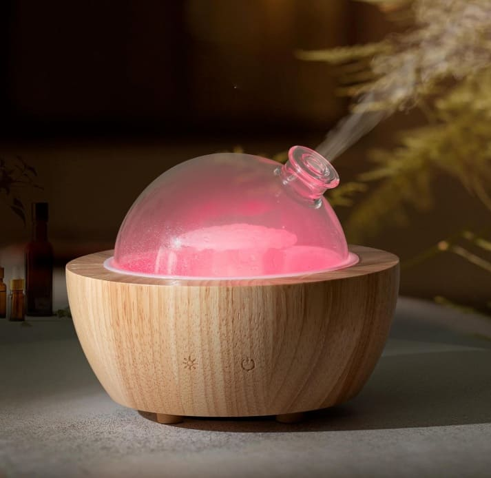

Poubelle qui sent, cuisine après un plat fort, pièce un peu renfermée… Les mauvaises odeurs finissent par peser sur l’ambiance de la maison. Il existe pourtant des gestes simples pour traiter la source et rafraîchir naturellement l’air, sans recourir à des parfums de synthèse agressifs.
Identifier, aérer, nettoyer
Il est primordial de repérer l’origine de l’odeur (poubelle, évier, textile, humidité…) plutôt que de simplement la masquer. Aérer quelques minutes plusieurs fois par jour, même en hiver, reste l’un des gestes les plus efficaces pour renouveler l’air.
Les grands alliés naturels
Plusieurs ingrédients simples de votre placard sont de véritables pièges à odeurs :
- Bicarbonate de soude : Un neutralisant polyvalent. Idéal au fond du frigo, dans le placard à chaussures, ou saupoudré sur un tapis avant aspiration.
- Vinaigre blanc : Parfait pour nettoyer les surfaces ciblées (évier, toilettes) et dissiper les odeurs d'humidité.
- Agrumes et clous de girofle : Les écorces piquées de clous de girofle parfument naturellement et sainement la pièce.
Outils utiles pour un air plus frais
Bicarbonate de soude & Charbon actif
Pour neutraliser les odeurs dans le frigo, les placards, la poubelle ou le meuble à chaussures. À utiliser en coupelle ou saupoudré.
Voir sur Amazon
Diffuseur en verre & bois
Un diffuseur ultrasonique avec base en bois massif et dôme en verre soufflé. Idéal pour assainir l'air (Citron, Lavande, Arbre à thé) en diffusion intermittente.
Voir le diffuseurGel destructeur d’odeurs Boldair
Un absorbeur sous forme de gel qui capte les molécules malodorantes sans les masquer. Parfait pour les pièces très tenaces (poubelle, litière).
Voir sur Amazon